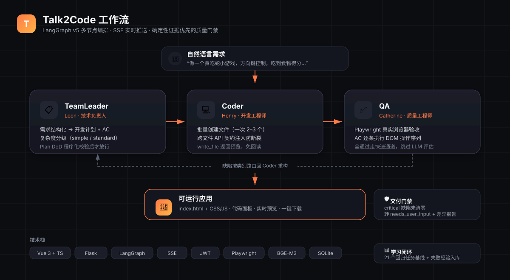

输入自然语言需求 → 多智能体协同完成 需求分析 / 批量编码 / 真实浏览器验收 → 实时产出可运行、可下载的产品代码。
从一句话需求，到验收通过的可运行应用——全程真实录屏，可复现。
流程说明：输入一句话需求 → 技术负责人拆解方案 → 开发工程师批量产出文件 → 质量工程师在浏览器里逐条执行验收条件 → 评分放行，交付可运行代码。
LangGraph 编排三个智能体，职责分离、相互校验，把工程质量当成一等公民。
把一句自然语言需求拆成结构化 Plan 与验收条件（AC），并判定复杂度等级，决定走快速通道还是完整流程。
批量创建文件，迭代轮数由文件数自适应决定；写入即返回内容预览，避免重复回读浪费上下文。
用 Playwright 在真实 headless Chromium 里逐条执行验收条件，全部通过走快速通道，否则按缺陷类别路由回炉。
多数工具止步于吐出代码片段；Talk2Code 要求生成结果能打开、能点、能用，才允许放行。
| 能力 | 做法 |
|---|---|
| ◆多智能体分工 | LangGraph 编排技术负责人 / 开发工程师 / 质量工程师，职责分离而非一次生成了事 |
| ◆真实验收 | 质量工程师用 Playwright 在 headless Chromium 里逐条执行 AC，以运行结果为准 |
| ◆交付门禁 | 关键缺陷清零才放行，未达标则转人工确认并附差异报告 |
| ◆跨文件契约 | 计划期声明 exports → 编码期契约注入 → 验收期闭合校验，保证模块间真正接通 |
| ◆写入即拦截 | PRE_WRITE Hook 零 LLM 成本拦掉沙箱环境必失败的写法，把问题挡在生成之前 |
| ◆缺陷自动回炉 | 验收不通过时按缺陷类别路由回开发工程师重构，架构类附根因卡片，修完再验 |
| ◆回归纪律 | 固化 21 个回归任务，改核心逻辑前后跑基线对照，经验沉淀进跨会话记忆 |
前端实时呈现 Agent 思考与产出，后端用 LangGraph 编排，全程 SSE 流式回传。

← 左右滑动查看完整架构图 →
本地或服务器均可，配置好一个 LLM API Key 就能用。
# 1. 安装依赖 python -m venv venv && source venv/bin/activate pip install -r backend/requirements.txt # 2. 配置模型（填入 LLM_API_KEY） cp backend/.env.example backend/.env # 3. 一键启动 → http://localhost:5001 ./start.sh ✔ 服务已就绪，输入一句话需求试试